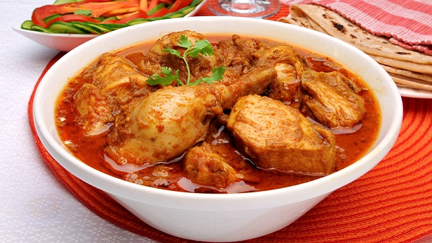

Chicken Korma Recepie

Korma or qorma is a dish originating in the Indian subcontinent,
consisting of meat or vegetables braised with yogurt (dahi), water or stock, and spices to produce a thick sauce or gravy
Ingredients
- chicken
- ghee (clarified butter)
- 8-10 Cardamoms
- 6-7 Cloves
- 2 tbsp garlic
- 1 tbsp coriander powder
- 1 tbsp chili
- salt
- 1 tbsp ginger paste
- 1 cup yogurt
- onions
- 1 tbsp garam masala
- few strands of saffrons
- coriander
- green chilies
- garlic
Steps
- Heat the vegetable oil into the pan, then put a dollop of ghee.
- Put cardamom, cloves, garlic and fry the mix properly.
- Then add the chicken and let it cook for about 2-3 minutes. Stir it
- Once it becomes brown, add coriander and chili powder and add salt
- Add ginger paste, mixture of fried onions and yogurt, let it cook for a minute.
- Then put garam masala and saffron for flavor.
- If the gravy is too thick add little bit of water before covering it. The masala should fuse well with the chicken.
- Cover it and give it some time to cook on slow fire. Let it simmer for about 10-15 minutes.
- Serve hot, garnished with coriander leaves and BOOM chicken korma. Enjoy!
Go Back